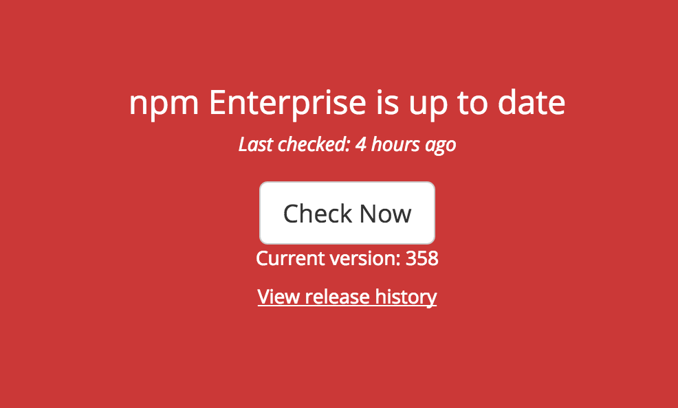

npm Enterprise Won't Boot
In the rare occasion that npm Enterprise (or some of its services) will not boot, here are some steps you can take to fix the problem:
Step 1: Make Sure You Have Enough Disk Space
A common cause of npm Enterprise failing can be your machine running out of
disk space. run du -h and ensure that both your root volume, and the data
directories you've configured under settings in :8800, have space available.
Step 2: Upgrade to the Newest Version of Replicated on Your npme Server
Older versions of Replicated (npme's orchestration software) ran into booting problems more frequently. Upgrading to a newer version of the appliance will frequently resolve these issues.
make sure you've run backups recently, before upgrading your appliance.
- ssh into your npme server.
- run
replicated --version if you you are on a version
< 2.0.0run:curl -sSL https://get.replicated.com/migrate-v2 | sudo bashif you are on a version
> 2.0.0run:sudo npm i npme -g --unsafe
Step 3: Upgrade to the Newest Versions of the npme Containers
To upgrade your containers, visit the admin console on :8800 and
run "Check Now".

Step 4: Force npm Enterprise to Reboot
To force npm Enterprise to reboot, run the following commands:
replicated app `replicated apps | awk -F" " 'END{print $1}'` stop
replicated app `replicated apps | awk -F" " 'END{print $1}'` start
What Now?
If things still aren't working, please email support@npmjs.com.